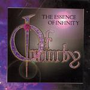

Home Artist links

Of Infinity - The Essence Of Infinity
| Artist: | Of Infinity |
| Title: | The Essence Of Infinity |
| Label: | self produced |
| Length(s): | 17 minutes |
| Year(s) of release: | 2004 |
| Month of review: | [04/2005] |
Line up
Tracks
| 1) | The Voice Without | 5.33
|
| 2) | Shadow Of A Lie | 6.57
|
| 3) | It's Only Forever | 4.50
|
Summary
A mini demo album from this gothic metal band from the States.
The music
The Voice Without leaves no questions unanswered. When the song starts
we are bombarded with droning rhythm guitars, and soon after the high pitched
female vocals set in. The band operates in the same area as bands such as
After Forever. Vocals have been doubled to add to the presence and the fullness of sound. Rhythm guitars makes their staccato assault on the senses,
while in the back the keyboards dance. It often strikes me with gothic
metal that under that heavy veneer, there is usually a rather friendly
and melodic song lying in wait. This song is certainly not bad, having
an attractive melody. Production and such could be better, but this is more
or less a demo. The interlude on piano is short but welcome. The ending
keyboards are a nice touch.
With Shadow Of A Lie is the next one up. It opens with violin and
easy going acoustic guitar building a dark romantic atmosphere. Then the
guitars and drums start their pounding, followed by the vocals.
Plenty of echo on the vocals here. I have heard better voices in the style,
admittedly the style demands a lot of its vocalists. I do always get the
impression that these bands sustain their words so long while singing to make
them fit the music. The rhythm guitar do their best to drown out the melodies
(both vocal and otherwise), which is maybe not such a good idea.
The violin comes back in, for some repetitive playing, building up the tension
nicely.
On It's Only Forever, the vocals stand more on themselves. This is quite a nice track, with the lyrics fitting better to the music, waltzing along a bit.
When the guitars set in, some of that is lost. I sometimes get a bit of a
Tori Amos feel here. Some nice piano rounds it all off.
Conclusion
As it is, Of Infinity still has a way to go. Of course, this is only a first
demo, probably without the necessary backing. The playing is fine, the vocals
could be better, but maybe this also has to do with the fact that they lie
a bit below the music, and the lyrics can be an awkward fit. It should be noted that the band has a few nice things that can be exploited in defining
a sound their own: the classical piano, the use of violin of course, and if
they continue to write songs like It's Only For Forever, with some clearer
vocal parts mixed in, then I see nothing wrong in their future.
© Jurriaan Hage